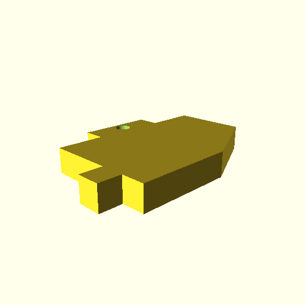
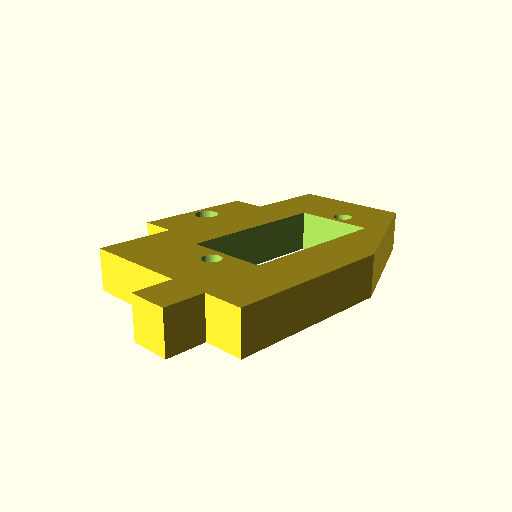
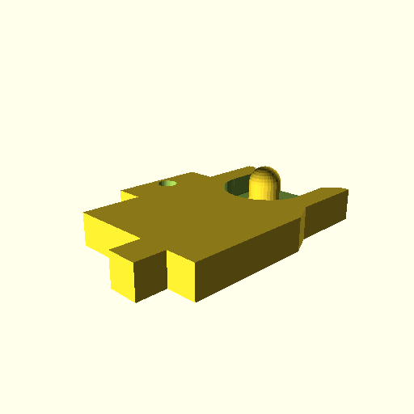
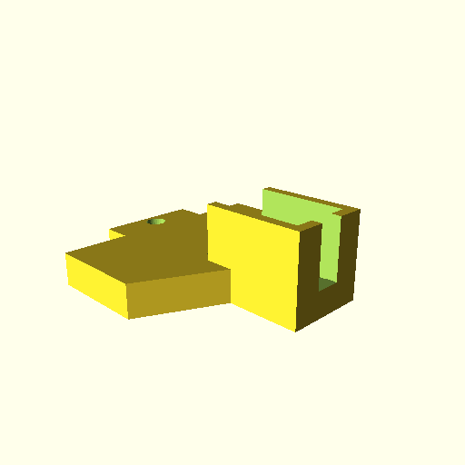
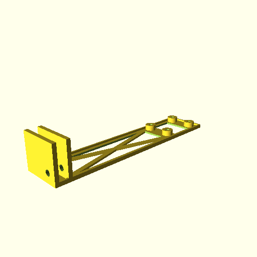

Welcome to Cylindric3D's MakerFarm Parts
X-Carriage Side Bracket - Standard
This replaces the small triangular side-bracket of the X-Carriage. There are different versions to create servo-mounts, depth-probe mounts and solenoid mounts.
X-Carriage Side Bracket - Servo
This replaces the small triangular side-bracket of the X-Carriage, and has the holes for mounting a servo.
X-Carriage Side Bracket - Depth-Probe
This replaces the small triangular side-bracket of the X-Carriage, and has an attachment point for a depth-probe.
X-Carriage Side Bracket - Solenoid
This replaces the small triangular side-bracket of the X-Carriage, and has an attachment point for a solenoid. This is for an experimental Z-probe.
RaspberryPi Camera Bracket
A simple bracket to mount a RaspberryPi camera module to the back of the printer. The OpenSCAD file has parameters in it to allow adjusting how far across the camera will sit.